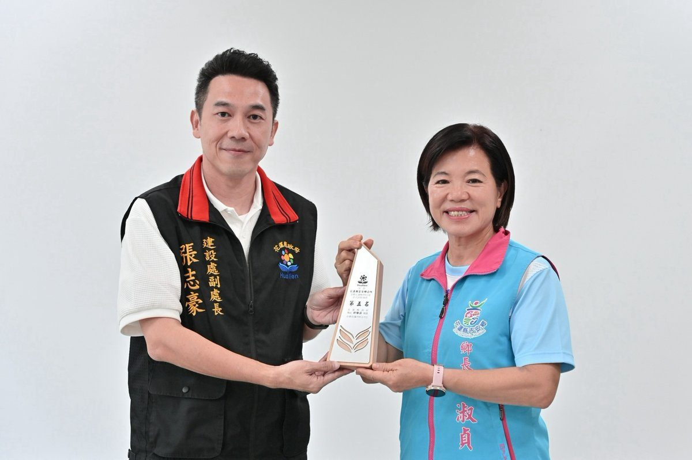

吉安仁和社區 自主防災連三屆奪優等

可樂電子報小編/編輯
吉安鄉仁和社區在114年度「水患自主防災社區評鑑」再度榮獲優等殊榮，這是該社區繼108、110、112年度後，第四度獲得此項肯定，展現社區在防災整備、教育宣導及自主應變等面向的優異成果。吉安鄉公所長年推動「韌性鄉城」政策，透過輔導社區自主防災，持續精進地方防救災量能。

花蓮縣政府建設處副處長張志豪於頒獎典禮中頒發獎座，並讚許吉安鄉公所推動水患自主社區成績優異。游淑貞鄉長表示，防災工作最重要的是凝聚共識，與縣府及中央攜手合作，無論災害規模大小，每位防災夥伴始終堅守崗位，共同守護鄉親生命財產安全。她回顧「0923」災害期間，全縣13鄉鎮市啟動跨區支援機制協助光復鄉，充分展現花蓮團結互助的精神。

游淑貞感謝花蓮縣政府建設處、消防局及中央駐地單位長期提供專業指導與資源支持，讓地方防災體系更加完善。她特別向仁和社區夥伴、協勤志工及民間防災團體表達誠摯感謝，強調各界無私奉獻建構了完整且具韌性的防災網絡。吉安鄉公所未來將持續秉持「預防重於救災、整備勝於應變」理念，攜手各方共同守護鄉親安全。